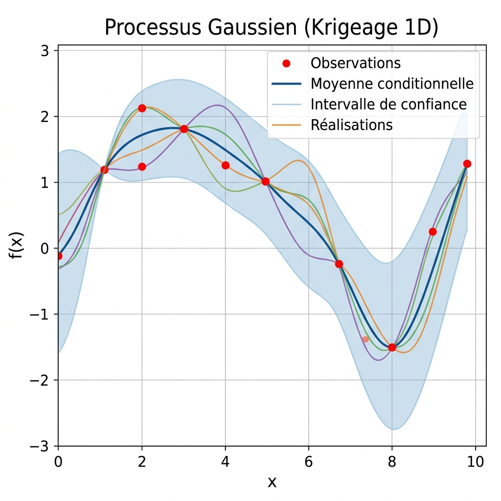
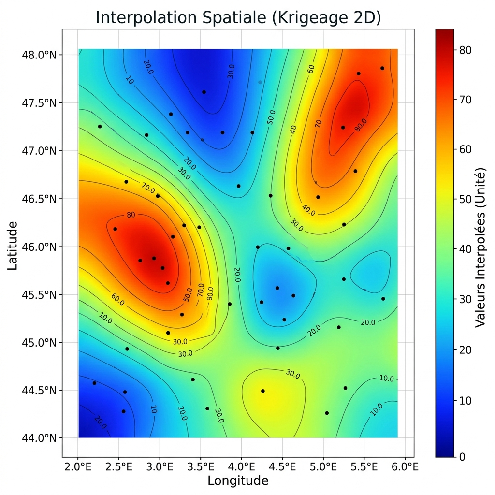

Comprendre le krigeage et les processus gaussiens : choix des noyaux et optimisation spatiale
krigeage, processus gaussien, géostatistique, interpolation spatiale, variogramme, noyau, covariance, Python
En analyse de données spatiales et environnementales, estimer la valeur d’une variable physique continue (telle que la température, la pression ou l’altitude) en des points non observés à partir d’un réseau discret de capteurs est un problème fondamental. Les méthodes d’interpolation déterministes classiques (comme l’inverse de la distance ou les splines) échouent à fournir une estimation de l’erreur associée aux prédictions. De plus, lors de l’implémentation de modèles probabilistes globaux, la sensibilité aux choix des fonctions de covariance et l’instabilité numérique lors de l’inversion de grandes matrices de corrélation peuvent induire des échecs de convergence ou des prédictions aberrantes.
L’approche par Processus Gaussiens (communément appelée krigeage en géostatistique) résout ce problème en introduisant un cadre probabiliste rigoureux. En définissant une fonction de covariance (noyau) adaptée à la physique du phénomène, le krigeage fournit non seulement l’estimation linéaire sans biais de variance minimale (BLUP), mais également une mesure exacte de l’incertitude locale via la variance conditionnelle. Cette formulation permet de reconstruire fidèlement des champs physiques continus tout en guidant intelligemment l’acquisition de nouvelles mesures.
1 Introduction
Dans le domaine de l’ingénierie et des sciences de la Terre, la collecte de données terrain est souvent limitée par des contraintes de coût ou d’accessibilité géographique. Reconstruire un champ continu à partir de ces mesures éparses nécessite des techniques d’interpolation robustes.
Le krigeage se distingue en modélisant la variable d’intérêt comme une réalisation d’un processus stochastique. Au lieu de supposer une forme géométrique rigide pour l’interpolateur, cette méthode s’appuie sur la structure spatiale de corrélation intrinsèque des données, représentée par le variogramme ou la fonction de covariance.
Cependant, la mise en œuvre pratique des processus gaussiens exige une compréhension fine de l’influence des hyperparamètres (portée, variance) et du comportement mathématique des différents noyaux de covariance. En outre, la résolution numérique des équations de krigeage soulève des défis de conditionnement de matrices qui nécessitent des stratégies de régularisation adaptées.
2 Processus conditionnés en 1D
Afin de comprendre le comportement des processus conditionnés par des observations, il convient d’étudier un cas d’école à une dimension. Considérons l’estimation d’une fonction synthétique non linéaire définie par :
\[f(x) = -x \sin(x)\]
L’ajustement du modèle géostatistique dépend directement du noyau de covariance sélectionné et des hyperparamètres associés : la variance globale \(\sigma^2\) et la portée spatiale \(a\) (longueur caractéristique de corrélation).
2.1 Sensibilité aux noyaux et aux hyperparamètres
Les propriétés de régularité du champ interpolé sont dictées par le noyau de covariance choisi :
- Le noyau Gaussien génère des réalisations infiniment différentiables. Il produit des courbes très lisses et régulières, adaptées aux phénomènes physiques continus sans ruptures de pente.
- Le noyau Matérn 3/2 possède une régularité plus faible (une fois différentiable). Il engendre des trajectoires plus rugueuses, mieux adaptées à la modélisation de variables environnementales soumises à des micro-variations locales.
- La portée spatiale (\(a\)) détermine la distance d’influence d’une observation. Une portée trop faible (\(a = 1\)) restreint la corrélation aux abords immédiats des points connus, produisant des oscillations rapides et isolées. Une portée trop grande (\(a = 10\)) lisse excessivement la courbe en ignorant les inflexions locales.
- La variance globale (\(\sigma^2\)) contrôle l’amplitude des fluctuations autorisées. Une variance sous-estimée produit un modèle trop rigide, incapable de s’ajuster aux amplitudes réelles, tandis qu’une variance surestimée élargit indûment les bandes d’incertitude.
En conditionnant le processus gaussien sur un ensemble d’observations (points rouges dans la Figure 1), la moyenne conditionnelle passe exactement par les points observés, et la variance conditionnelle s’y annule, illustrant la réduction locale parfaite de l’incertitude.

2.2 Optimisation de la recherche de points : Expected Improvement (EI)
Ce cadre probabiliste est couramment exploité dans les algorithmes d’optimisation bayésienne pour planifier l’acquisition séquentielle de données (planification d’expériences). Pour déterminer l’emplacement optimal \(x^*\) de la prochaine mesure, on évalue différents critères de sélection :
- Minimisation de la moyenne conditionnelle : sélectionne le point où la valeur prédite est minimale (exploitation).
- Maximisation de la variance conditionnelle : sélectionne le point où l’incertitude est la plus grande, souvent le plus éloigné des données existantes (exploration).
- Maximisation de l’Expected Improvement (EI) : réalise un compromis optimal en calculant l’amélioration espérée par rapport au minimum actuel \(y_{min}\) :
\[EI(x) = (y_{min} - \hat{\mu}(x)) \Phi\left(\frac{y_{min} - \hat{\mu}(x)}{\hat{s}(x)}\right) + \hat{s}(x) \phi\left(\frac{y_{min} - \hat{\mu}(x)}{\hat{s}(x)}\right)\]
où \(\Phi\) et \(\phi\) représentent respectivement la fonction de répartition et la densité de la loi normale centrée réduite, et \(\hat{s}(x)\) l’écart-type conditionnel. Ce critère cible naturellement les zones où la prédiction est basse et l’incertitude est forte.
3 Interpolation spatiale 2D et stabilisation numérique
Le passage à des coordonnées bidimensionnelles (2D) permet d’appliquer ces concepts à des données géographiques réelles. L’analyse repose ici sur un réseau d’observations régionales (composé de 175 stations de mesure) et une grille de simulation cible (599 points de prédiction).

3.1 Le problème du conditionnement de matrice
La prédiction par krigeage implique de résoudre le système d’équations linéaires reposant sur la matrice de covariance des données observées \(\mathbf{K}\) :
\[\mathbf{K}_{ij} = C(x_i, x_j)\]
Lorsque des stations d’observation sont très proches géographiquement, leurs lignes dans la matrice de covariance deviennent presque linéairement dépendantes. La matrice \(\mathbf{K}\) devient alors mal conditionnée, et son inversion numérique directe échoue ou produit des valeurs aberrantes (perte de la propriété de matrice définie positive).
3.2 La régularisation par effet pépite (Nugget Effect)
Pour stabiliser le calcul sans biaiser les prédictions, il est nécessaire d’introduire une régularisation diagonale, qui correspond physiquement à un effet pépite (nugget effect) \(\varepsilon = 10^{-6}\). Cet ajustement modélise un bruit de mesure blanc ou des variations à micro-échelle non résolues par le maillage :
\[\mathbf{K}_{\text{stabilisée}} = \mathbf{K} + \varepsilon \mathbf{I}\]
L’ajout de ce terme diagonal résout l’instabilité numérique en augmentant les valeurs propres de la matrice, garantissant ainsi une inversion stable et robuste.
Voici le code mathématique de résolution du krigeage intégrant cette stabilisation :
# Exemple de résolution d'un système de Krigeage Ordinaire stabilisé
import numpy as np
def solve_ordinary_kriging(dists_tr_tr, dists_te_tr, values_tr, range_param, nugget):
"""
Résout le système d'équations du Krigeage Ordinaire.
dists_tr_tr : matrice des distances entre les observations connues (N x N)
dists_te_tr : vecteur des distances entre le point cible et les observations (1 x N)
values_tr : valeurs mesurées aux observations connues (N,)
"""
n = len(values_tr)
# Construction de la matrice de covariance avec régularisation diagonale (nugget)
cov_matrix = np.exp(-dists_tr_tr / range_param) + nugget * np.eye(n)
cov_vector = np.exp(-dists_te_tr / range_param)
# Matrice augmentée du système de Krigeage Ordinaire
K_matrix = np.zeros((n + 1, n + 1))
K_matrix[:n, :n] = cov_matrix
K_matrix[:n, -1] = 1.0
K_matrix[-1, :n] = 1.0
# Vecteur membre de droite augmenté
k_vector = np.zeros(n + 1)
k_vector[:n] = cov_vector
k_vector[-1] = 1.0
# Résolution du système linéaire
weights = np.linalg.solve(K_matrix, k_vector)
# Calcul de la valeur interpolée
interpolated_value = np.dot(weights[:n], values_tr)
return interpolated_value4 Limites et compromis des processus gaussiens
Bien que le krigeage soit mathématiquement optimal (BLUP), son utilisation pratique comporte des limites structurelles :
- Le coût algorithmique : La résolution du système linéaire nécessite l’inversion d’une matrice de taille \((N+1) \times (N+1)\), ce qui représente un coût en \(O(N^3)\). Cette complexité limite l’usage direct du krigeage global sur des ensembles de données comprenant plus de quelques milliers de points d’apprentissage. Des approximations locales ou des méthodes de partitionnement spatial sont alors nécessaires.
- La sensibilité au choix des hyperparamètres : Une mauvaise estimation de la portée (\(a\)) ou du noyau peut conduire à des reconstructions physiques aberrantes (lissage excessif ou oscillations non physiques).
5 Conclusion
Le krigeage et les processus gaussiens offrent un cadre mathématique rigoureux pour l’interpolation spatiale et la quantification des incertitudes. À travers l’analyse de sensibilité des noyaux (Gaussien vs Matérn) et l’application de régularisations numériques comme l’effet pépite, ces outils se révèlent indispensables pour la modélisation de phénomènes géophysiques continus.